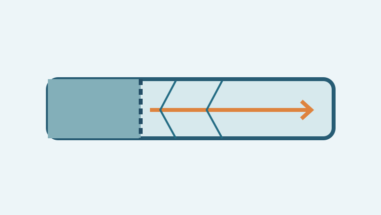

Project overview
An experimental course study undertaken at the Northwestern Polytechnical University combustion laboratory, covering the high-pressure shock-tube apparatus and rapid thermal processes.
Methods
The report discusses pressure-wave generation in a diaphragm-separated shock tube, experimental preparation and operating sequence, and Beer–Lambert absorption principles used to interpret gas-species concentration.
Results
The presentation documents the apparatus, experimental sequence, and observations associated with thermal response investigations of an energetic material.
Scope and limitations
This portfolio summary reports the laboratory study at a high level; it does not claim independently validated chemical-kinetic models.
Course project. Full report can be provided upon request.